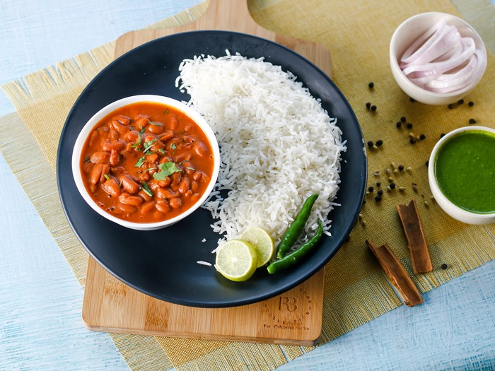

Rajma Chawal

This simple Indian dish consists of red beans (rajma) and cooked rice (chawal).
Rajma is traditionally made with onions and tomato purée which acts as a gravy for the red beans.
This dish makes for a complete vegetarian meal that is suitable for lunch or dinner.
Ingredients
- 1/2 cup kidney beans
- 3 cup cooked rice
- 1 tbsp oil
- 1/2 cup sliced onion
- 1/2 tsp ginger garlic paste
- 1/2 cup chopped tomatoes
- 1/4 tsp turmeric powder
- 1/2 tsp chilly powder
- salt to taste
- 1 tsp finely chopped coriander
- 1 tbsp cummin seeds
Recipe
- Heat the oil in a pressure cooker and add the cummin seeds,saute on a medium flame for few seconds.
- Add the onions and ginger-garlic paste and saute for 2-3 mins on medium flame.
- Add the tomatoes,turmeric powder,chilly powder,salt adn mix well and cook on a medium flame for 2 mins.
- Add Rajma and one cup water,mix well in pressure cooker for 4 whistles.
- Allow the steam to escape before opening the lid.
- Add the cooked rice,mix gently and cook on medium flame for 2 mins.
- Add the corriander and mix well